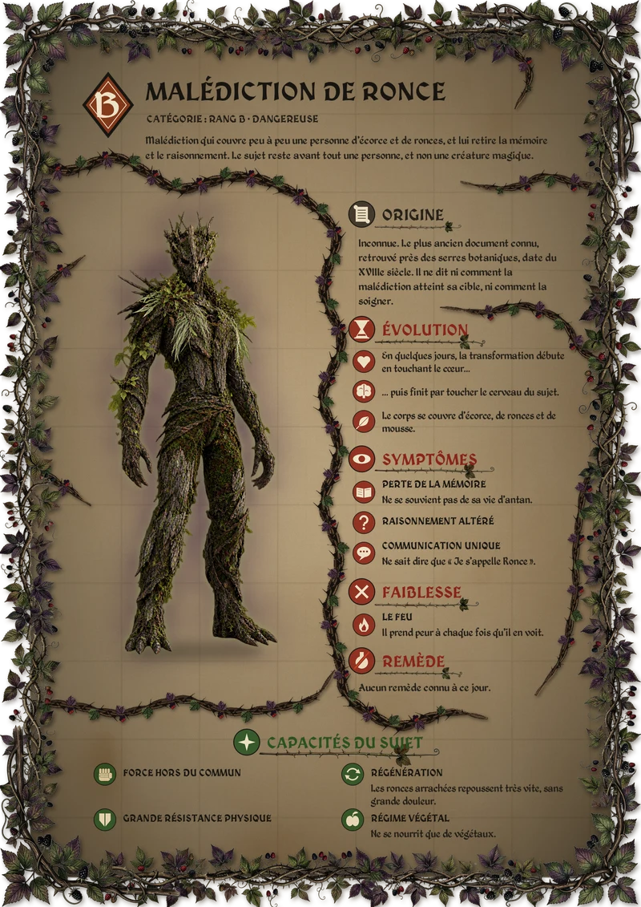

Malédiction de Ronce
Malédiction de rang B qui couvre peu à peu une personne d’écorce et de ronces, et lui retire la mémoire et le raisonnement. Le sujet reste avant tout une personne, et non une créature magique.
Son origine est inconnue. Le plus ancien document connu, retrouvé près des serres botaniques, date du XVIIIe siècle : un observateur y consigne, jour après jour, la transformation d’un homme qui ne sait plus dire que « Je s’appelle Ronce ». Le mal part du cœur, gagne le corps puis la tête ; le feu le fait fuir, mais aucun remède n’est connu à ce jour.
Le devoir rassemble la fiche de la malédiction, le carnet de recherche de Viktor et la lettre retrouvée.
Fiche

Carnet de recherche


Animations
